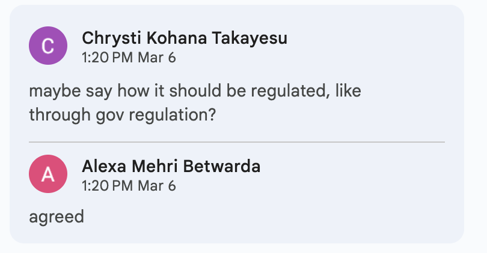
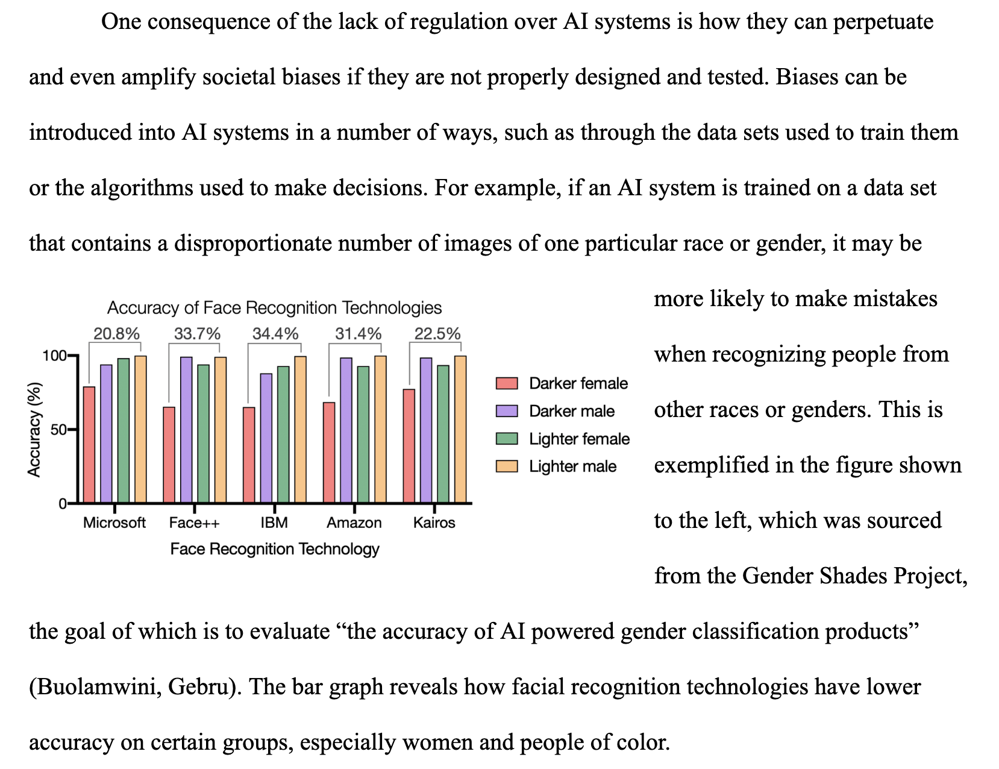

Writing has never really been my strong suit. For as long as I can remember, I've always preferred subjects heavier in problem-solving and pattern recognition, like math and the sciences. Naturally, I was a bit nervous about taking my first college writing class. However, looking back at the quarter, I can say with certainty that the course has made a significant improvements to the way I approach writing in an academic setting. In this reflection, I will detail my experiences in Writing 60 (WR60), the skills I acquired, and how the course affected my perspective on writing.
Throughout my education up through high school, I was always taught to "take myself out" of my writing; that is to say, I was expected to present information in a detached, objective manner. First person point of view was to be avoided whenever possible, and phrases like "The purpose of this essay is to..." or "In this essay I will..." were treated like taboo. As a result, I had always thought of these things as "bad" writing practices. However, as I've learned in WR60, inserting your own voice into your writing can actually be quite powerful, and directly stating the purpose of an essay within the thesis statement can actually improve the quality and clarity of thought within the essay. This realization has definitely improved my ability to write good thesis statements.
To demonstrate this, take a look at the following thesis from the rough draft of my Advocacy Project, in which I still have the mindset of remaining detached from my writing.
"Although it could be argued that creating legislation with the purpose of regulating AI will only serve to hinder the advancement and innovation of this emerging technology, AI must be regulated more strictly in order to ensure that it cannot be used to perpetuate societal biases, spread disinformation, or be used for impersonation/identity theft."
It's not bad, but it is a bit vague, and it leaves you with more questions than answers, as seen in Figure 1 below.
Figure 1: Pictured here are some comments left by my classmates during a group rough draft review. They raised some concerns about the ambiguity present in my thesis statement.
After receiving the feedback seen in Figure 1, I adjusted my thesis statement to better convey the arguments that I would eventually explore in the body paragraphs. One of these changes was introducing the phrase "The purpose of this essay is..." which I previously thought was bad practice within an academic essay. Now, compare the original thesis to the thesis that ended up in the final draft.
"The purpose of this essay is to argue that there is a lack of regulation for AI technology in the US and to propose solutions to this issue. Although it could be argued that creating legislation with the purpose of regulating AI will only serve to hinder the advancement and innovation of this emerging technology, the criminalization of certain use cases of AI would help to keep the American public safe. These use cases include the police and border control's use of biometric recognition technology, as well as the use of deepfakes to impersonate or even create pornography of people without their consent."
The revised thesis gives you a more solid grasp on what the essay is talking about, and is far more specific in introducing the proposed solutions to the problem. Overall, I would say I have definitely improved at writing clear, specific thesis statements which lay the foundations for the rest of the essay.
Another aspect of my writing that has improved is my use of multimodality. Prior to taking this class, I never integrated other forms of media into my writing other than text. However, I've learned that adding visuals and using creative formatting can greatly enhance the effectiveness of my writing. By incorporating relevant images, videos, graphs, and charts, I can provide additional context and clarity to my ideas.
Figure 2: A paragraph from my Contexts Project which explains how bias can be introduced to AI datasets. The paragraph makes use of multimodality by integrating a graph titled "Accuracy of Facial Recognition Technology."
As seen in Figure 2, visuals can be extremely helpful for illustrating a point. Rather than just telling the reader that AI can become biased, I can show a real-world example of this happening. Additionally, multimodality can also be used to evoke an emotional response from the reader.
Furthermore, using creative formatting techniques such as bullet points, subheadings, and bold text can help break up long blocks of text and make my writing more visually appealing and easier to read.
Overall, I've come to appreciate the power of multimodal writing and will continue to incorporate these techniques into my future writing projects.